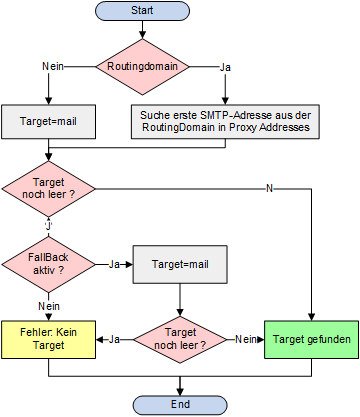

Interaktive Webseite
Was ist mit "interkative Webseite" gemeint?
Um eine Webseite interaktiv zu machen, muss alles stimmen im Bezug der Übersichtlichkeit und der Darstellung. Zum einen dürfen auf einer Webseite keine Fehler zu finden sein, zum anderen sollen Formulare korrekt und verständlich dargestellt werden.
Formulare
Ein Formular ist ein wichtiger Anhaltspunkt auf einer Webseite. Formulare sind sehr vielseitig und sollten darum besonderst beachtet werden.
Ein Formular sollte richtig formatiert werden, zudem sollte diese Formatierung passend zum Layout der Webseite sein. Die Reihenfolge der Felder, welche auszufüllen sind, sollte stimmen. Hierfür kann die TAB-Taste zur Testung dienen. Formulare dürfen keine Fehler aufweisen, sonnst wirkt das unprofissionell und hat auf den Besucher sowie das Ranking grossen Einfluss. Ein ganz wichtiger Punkt ist das "responsive Webdesign". Ein Formular muss unbedingt responsive sein, damit die Besucher das Formular einfacher verstehen können und das es ein bessere Position im Netz bekommt (ranking). Das Versenden des Formulars muss einwandfrei funktioneren, sonst kann die Webseite an Position Besuchern leiden. Schlussendlich muss das Formular verständlich und darstellerisch gut sein um eine erfolgreiche Webseite führen zu können.
Beispiel:
Formularsteuerelemente
Es gibt verschiedene Arten von Formularsteuerelementen, mit denen man von den Besuchern einer Webseite Informationen einholen kann.
Text eingeben:
Texteingabe
Kennworteingabe
Textbereich
Auswahl treffen:
Radio-Buttons
Checkboxen
Dropdown-Listen
Formulare einrichten:
Sendeschaltfläche
Bildschaltflächen
Dateiupload
Was ist ein Skript?
Ein "Script" ist eine Abfolge mehrerer Anweisungen, die ein Computer nacheinander abarbeiten muss. Somit kann dann schlussendlich das Ziel erreicht werden.
Skript schreiben
Um ein Skript schreiben zu können, muss man sich im Vorraus schon über den Vorgang der Befehle Gedanken machen.
- Ziel festlegen
Als erstes muss man festlegen, welche Arbeit erledigt werden sollen. Dies muss man sich als Rätsel vorstellen, welches der Computer lösen soll. - Das Skript gestalten
Um das Skript zu getalten,muss das Ziel in eine Reihe von Aufaben zerlegt werden. Dies kann in Form eines Flussdiagramms ausgeführt werden.
Anschliessend kann man die Schritte aufschreiben, die der Computer ausführen muss, um die einzelnen Aufgaben zu erledigen. Das ähnelt einem Rezept, das der Computer befolgen kann. - Den Code für die einzelnen Schritte schreiben
Jeder Schritt muss in einer Programmiersprache geschrieben werden, die der Computer versteht, in unserem Fall in JavaScript.
Folgende Schritte müssen beachtet werden:
Skripts entwickeln: Aufgaben
Sobald das Ziel erfasst ist, kann mit den Aufgaben begonnen werden. Hierfür sollte wie schon oben genannt ein Flussdiagramm genutzt werden, um diesen Vorgang klar und übersichtlich darzustellen.
Beispiel:
Nötige Grundkenntnisse fürs Erstellen eines Formulares
| Element | Beschreibung |
|---|---|
| <form> | Formularsteuerelemente stehen in einem <form>-Element. Es muss über das Attribut <action> verfügen und hat gewöhnlich auch die Attribute "method" und "id". |
| <input> | <Mit dem Element <input> können verschiedene Formularsteuerelemente
erstellt werden, deren Art durch den Wert des Attributs "type" bestimmt wird. |
| <textarea> | Mit dem Element <textarea> kann ein mehrzeiliges Texteingabefeld
erstellt werden. Dieses Element ist im Vergleich zu Anderen nicht leer und muss daher über ein öffnendes sowie schliessendes Tag verfügen. |
| <select> | Dieses Element dient zur Erstellung einer Dropdownliste (auch
Auswahlliste oder Listenfeld genannt). Somit können Benutzer eine Option aus einer herausklappbaren Liste auswählen. |
| <option> | Mit diesem Element werden die Optionen der Dropdown-Liste angezeigt. Das Element <option> gehört in das Element <select> rein und bildet somit das Grundgerüst einer Dropdown-Liste. |
| <button> | Mit dem Element <button> kann eine anklickbare Fläche generiert werden,
welche in einem Formular dazu dienen, eingegebene Daten dem Empfänger abzuschicken. |
| <label> | Formularsteuerelemente sollten stets ein eigenes <label>-Element für
die Beschriftung aufweisen, sodass sie für sehbehinderte Benutzer zugänglich sind. |
| <fieldset> | Gruppieren zusammengehöriger Steuerelemente kann in einem
<fieldset>- Element zusammengefasst werden. |
| <legend> | Das Element <legend> enthält eine Beschriftung, die den Zweck dieser
von Formularsteuerelemente angibt. |
GET vs POST
Javascript
Javascript mit HTML-Dateien verknüpfen
Mithilfe des HTML-Elements <script> kann mitgeteilt werden, dass der Code in einem Skript steht. Das Attribut src dieses Elements gibt an, wo die JavaScript-Datei abgespeichert ist.
Beispiel
Skripts auf der Seite platzieren
Hin und wieder wird JavaScript-Code auch auf der HTML-Seite zwischen <script>- und </script>-Tags sehen. (Es ist jedoch besser, ihn in einer eigenen Datei unterzubringen.)
Beispiel
Objekte & Methoden verwenden
Beispiel
Das document-Objekt steht für die gesamte Webseite. Alle Browser implementieren dieses Objekt. Man kann es verwenden, indem man einfach seinen Namen nennt.
Die Methode write() des document-Objekts erlaubt es, neuen Inhalt auf die Seite zu schreiben, und zwar an die Stelle, an der sich das Element <script> befindet.
Das document-Object verfügt pber mehrere Methoden und Eigenschaften. Sie werden als
"Member" des Objekts bezeichnet.
Um auf einen Member eines Objekts zuzugreifen, hängt man an den Objektnamen einen Punkt und dann
den Namen des Members an. Der Punkt wird als "Memberoperator" bezeichnet.
Variable erstellen
Eine Variable ist mit der Klassierung in HTML gut zu vergleichen. Bei der Varible folgt als aller Erstes das Schlüsselwort für die Variable selber. Danach folgt der Variablenname, welcher nach eigenen Gunsten bestimmt werden kann.
Beispiel:
Um den Wert einer Variable zu definieren, muss der Name des Attributs angegeben werden. Danach folgt der Wert. Sobald der Wert Buchstaben enthält, muss er in "Anführungszeichen" definiert werden. Wie bei jedem anderen Code auch wird hier mit einem ";" abgeschlossen.
Beispiel
Datentypen der Variablen
Man unterscheidet zwischen drei Arten: nummerische-, String- und Boolesche Daten. Der nummerische Datentyp ist für die Zahlen da. Die Strings bestehen aus Buchstaben und anderen Zeichen. Anderst hingegegen können boolesche Daten nur true oder false sein.
Werte der Variablen ändern
Es könnte sein, dass nach einiger Weile die Werte der Attribute geändert werden sollten. Hierfür muss keine
komplizierte Lösung gesucht werden, sondern man kann das Attribut nochmals anschreiben und den neuen Wert
eingeben.
Sollte es mehrere Werte schon gehabt haben und man möchte nur z.B. den dritten Wert ändern, muss dies angegeben werden.